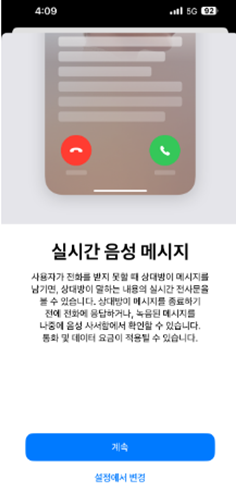

[공지] iOS 18.4 신규 기능 '음성 사서함' 관련 응대안
[기능 동작 조건]
1. 아이폰으로 걸려오는 전화를 17초 가량 받지 않는 경우 (※ 17초에서 변경될 수 있음)
2. 전화 수신 화면에서 '음성 사서함' 버튼 또는 '거절' 버튼을 누를 경우
※ 전화벨이 울리고 17초 이전에 전화를 수신하여 통화가 연결되면 음성 사서함 기능이 동작하지 않음
[음성사서함 연결시]
ㅇ 안내 음성 이후 수신자의 아이폰에 녹음이 되며, 녹음이 끝나고 통화를 종료하면
아이폰에 저장된 음성을 듣거나 녹음 내용을 텍스트로 확인할 수 있음 (전화 > 음성 사서함)
[과금관련]
ㅇ 음성 사서함 연결 안내 멘트가 시작할 때부터 과금이 되며,
별도 과금 안내 멘트는 없음
ㅇ 단, iOS 18.4 업데이트 이후 '전화 > 음성 사서함' 기능을
처음 실행시키면 과금 관련 알림 화면이 표시됨
(하단 이미지 참고)
[기능설정]
ㅇ '설정 > 앱 > 전화 > 실시간 음성 메시지'에서 음성 사서함 기능을 켜거나 끌 수 있음
(기본 설정은 켜져 있는 상태)
ㅇ 음성 사서함 기능을 끄면 기존과 같이 통신사 음성 사서함 연결 가능
